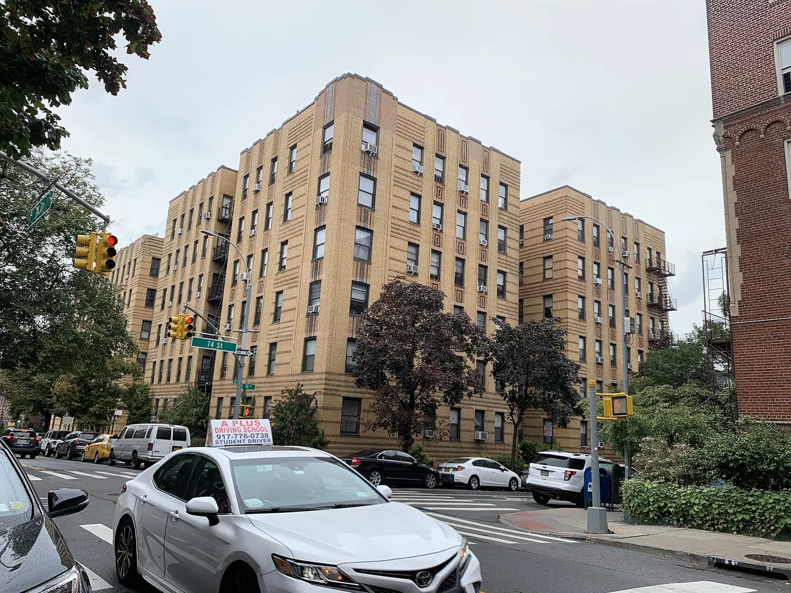

Jackson Heights, block by block
Jackson Heights is one of the most linguistically diverse places on earth, and it eats like it. The blocks around 74th Street and Roosevelt Avenue are the best food crawl in New York, and the garden apartment blocks behind them are quietly beautiful.
Checked 2 November 2026. Prices, opening hours and transport details were verified against official sources. Things change — confirm before you book. How we check.
The most diverse few blocks in the city
Little India runs along 74th Street, Latin American food runs along Roosevelt Avenue under the 7 train, and the two meet at a single intersection. You can eat three cuisines in an hour without leaving a block.
Start on 74th Street between Roosevelt and 37th Avenue: sari shops, spice markets, sweet shops and the restaurants above them. Then walk west along Roosevelt Avenue, where the taquerias, bakeries and juice carts take over. The rule is simple: eat where the queue is local.
Behind the avenues the neighbourhood changes. The garden apartment blocks around 35th Avenue were built as a planned suburb and are among the nicest residential streets in Queens. Walk them after lunch, when the food has settled and the light is going.

Streets worth walking
Jackson Heights is small; these four blocks cover it.
74th Street
Little India: spice shops, sweet shops and restaurants stacked above the street.
Roosevelt Avenue
The taqueria corridor beneath the 7 train; join the busiest cart or counter.
The garden apartment blocks
The quiet historic district north of the avenues, with private gardens and brick courtyards.
Travers Park
The neighbourhood's main park, with a playground and a weekend greenmarket.
The food crawl
This is the cheapest and most varied eating in the city. Prices are a guide.
| Place | What to order | Price |
|---|---|---|
| 74th Street restaurants | Indian thali or dosa | budget |
| Roosevelt Avenue taquerias | Tacos and tortas | budget |
| Tibetan momo shops | Steamed or fried momos | budget |
| Colombian bakeries | Pan de bono and coffee | budget |
A food crawl in Jackson Heights
One street at a time, sharing as you go, then a walk to let it settle.
-
11:00 — 74th Street
Walk the spice and sweet shops first, then choose a restaurant for an early lunch.
-
12:00 — Lunch on 74th Street
An Indian thali or a dosa; order widely and share.
-
13:30 — Roosevelt Avenue
Tacos, tortas and bakeries under the 7 train; join the queue that looks most local.
-
15:00 — The garden blocks
Walk north into the quiet historic district, where the brick apartments and gardens begin.
-
16:00 — Travers Park
Finish in the park, then walk back to the station for the train into Manhattan or on to Flushing.
Getting there and getting it right
The 7, E, F, M and R all stop at Jackson Heights–Roosevelt Avenue, about 25–30 minutes from Midtown. The 7 runs above Roosevelt Avenue, which makes the food crawl easy to follow on foot. The neighbourhood is flat and the blocks are short; you will not need a bus.
Weekend afternoons are the busiest and most atmospheric, when the food streets fill with families. A weekday lunch is calmer and easier for ordering. Evenings are lively but some smaller shops close earlier than you might expect.
Nearby and worth your time
Jackson Heights sits between Astoria and Flushing on the 7 line, so it is easy to combine.
Jackson Heights questions
Is Jackson Heights worth visiting for food?
Yes. The blocks around 74th Street and Roosevelt Avenue are the best food crawl in New York for the money, with South Asian and Latin American cooking within a few minutes of each other.
How do I get to Jackson Heights?
The 7, E, F, M and R all stop at Jackson Heights–Roosevelt Avenue. The trip from Midtown is about 25–30 minutes.
What should I order in Jackson Heights?
Start with an Indian thali or dosa on 74th Street, then tacos on Roosevelt Avenue, then something from a Tibetan or Colombian counter. Order what the next table is having.
How long do I need in Jackson Heights?
Two to three hours is plenty for the food streets and a walk through the garden apartment blocks. It is an easy half-day combined with Flushing or Astoria.